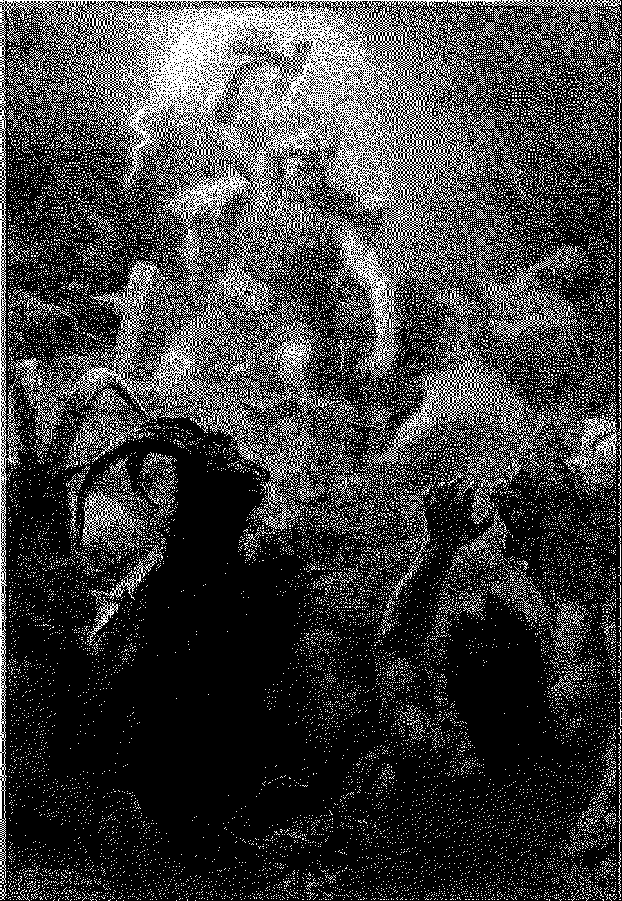
open full sizethor-zine-1bit.png
Floyd–Steinberg diffusion into one bit, the honest photocopied zine
Tor's Fight with the Giants → floyd-steinberg · bw · 2 colours · 900×1301 · 496 KB
preset zine
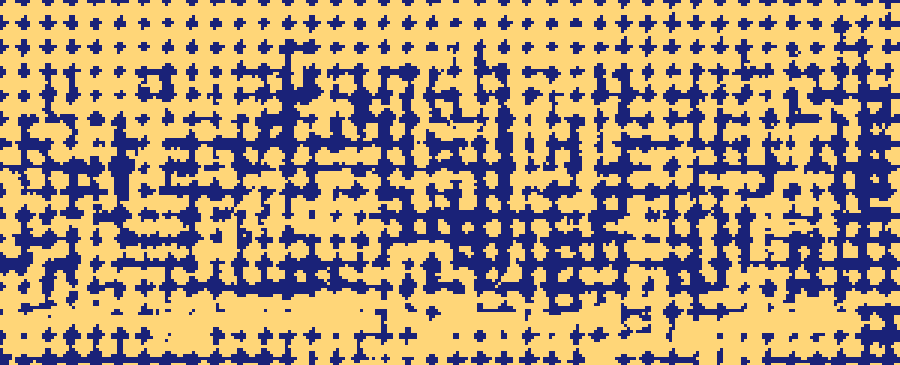
open full sizecouncil-riso-duotone.png
two inks and nothing else, the duotone a riso poster is built on
The Council of the Gods → clustered-dot-8 · bw · 2 colours · 900×365 · 23 KB
preset duo
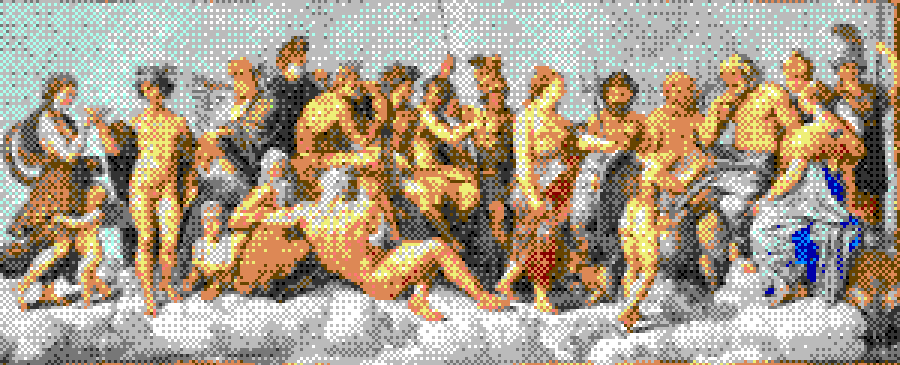
open full sizecouncil-c64-poster.png
the Commodore 64's own sixteen colours, a poster forty years late
The Council of the Gods → bayer8 · c64 · 14 colours · 900×365 · 57 KB
preset c64
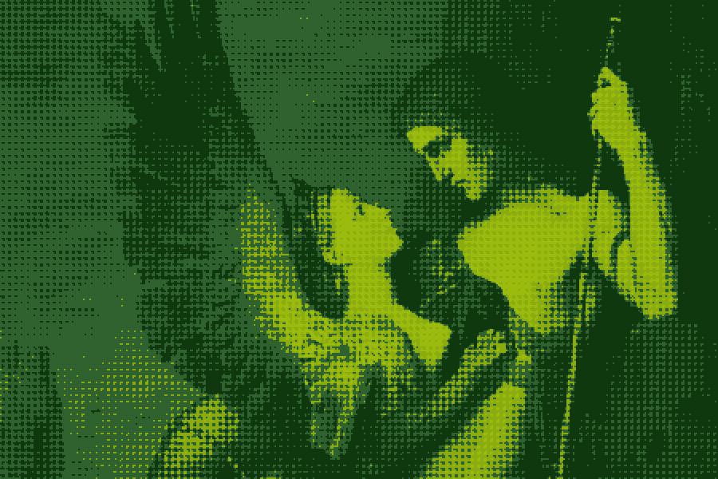
open full sizeoedipus-terminal-green.png
a phosphor re-ink on a four-shade screen, with scanlines over the top
Oedipus and the Sphinx → clustered-dot · gameboy · 4 colours · 900×600 · 82 KB
preset terminal
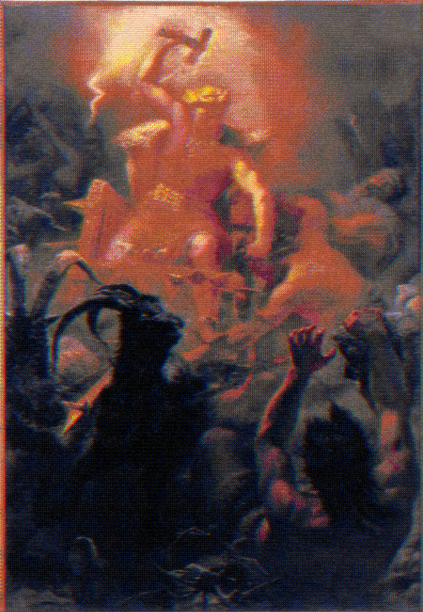
open full sizethor-vhs-decay.png
the whole effects stack at once - aberration, blocks, scanlines and grain
Tor's Fight with the Giants → bayer4 · pico8 · 90730 colours · 900×1301 · 1135 KB
preset vhs
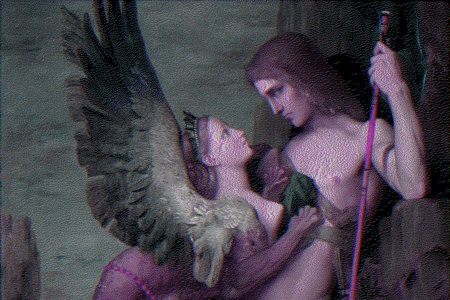
open full sizeoedipus-glitch-sort.png
pixel sorting - rows of the proof reordered by tone instead of drawn in place
Oedipus and the Sphinx → floyd-steinberg · cga · 18 colours · 900×600 · 604 KB
preset sort
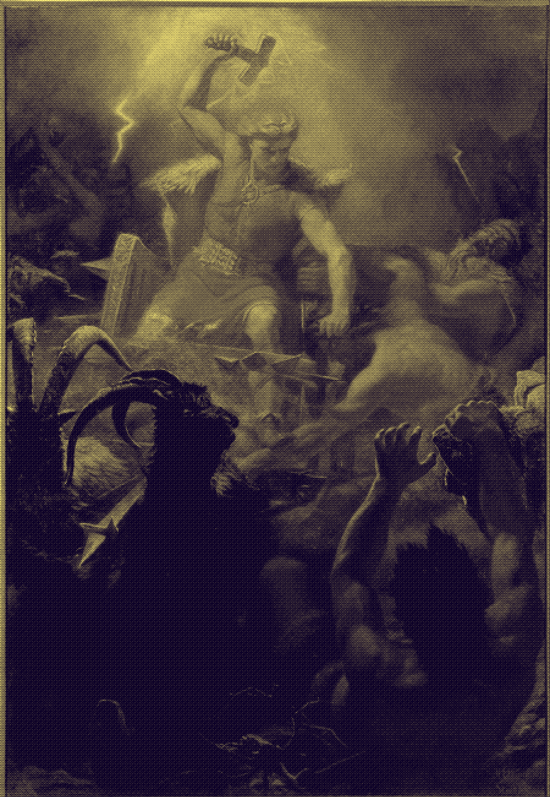
open full sizethor-thermal-cam.png
a thermal re-ink: the grade decides what is hot, the dither decides the edges
Tor's Fight with the Giants → bayer16 · gray-16 · 16 colours · 900×1301 · 361 KB
preset thermal
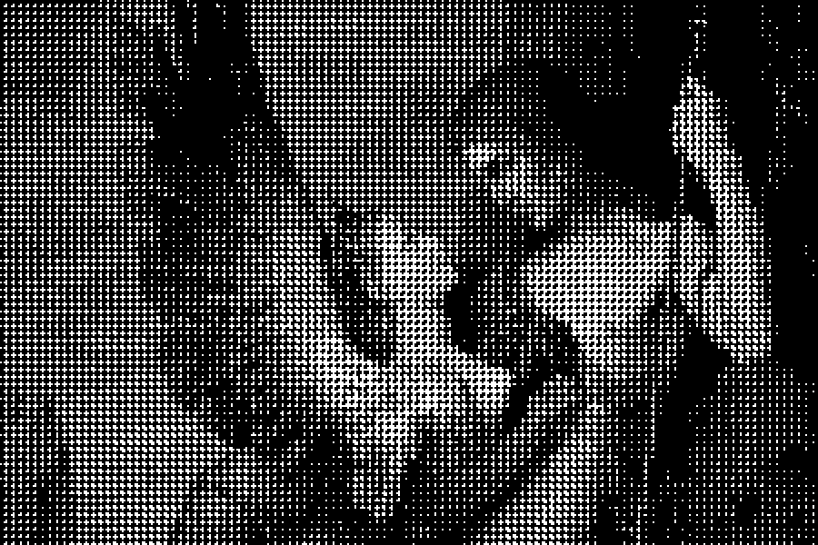
open full sizeoedipus-newsprint.png
a halftone screen - an ordered dot at every pixel size, no noise anywhere
Oedipus and the Sphinx → halftone · bw · 2 colours · 900×600 · 58 KB
preset newsprint
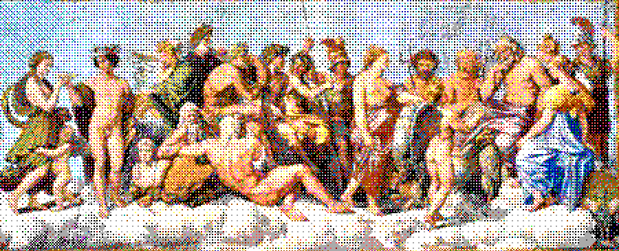
open full sizecouncil-yliluoma-ega.png
Yliluoma mixing: a sixteen-colour hardware palette, blended in dots rather than snapped
The Council of the Gods → yliluoma-polished · ega · 16 colours · 900×365 · 160 KB
yliluoma-polished · ega · pixel size 2
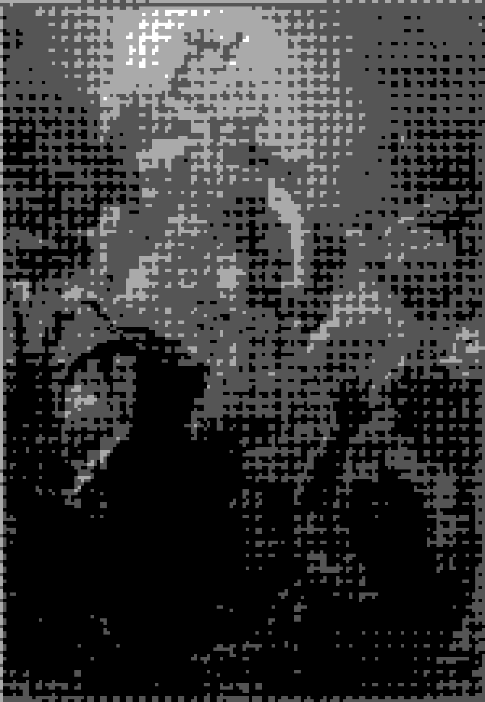
open full sizethor-pixel-art-6x.png
pixel size 6 on a four-ink handheld screen - the chunky output people come for
Tor's Fight with the Giants → clustered-dot · gameboy-pocket · 4 colours · 900×1301 · 46 KB
clustered-dot · gameboy-pocket · pixel size 6
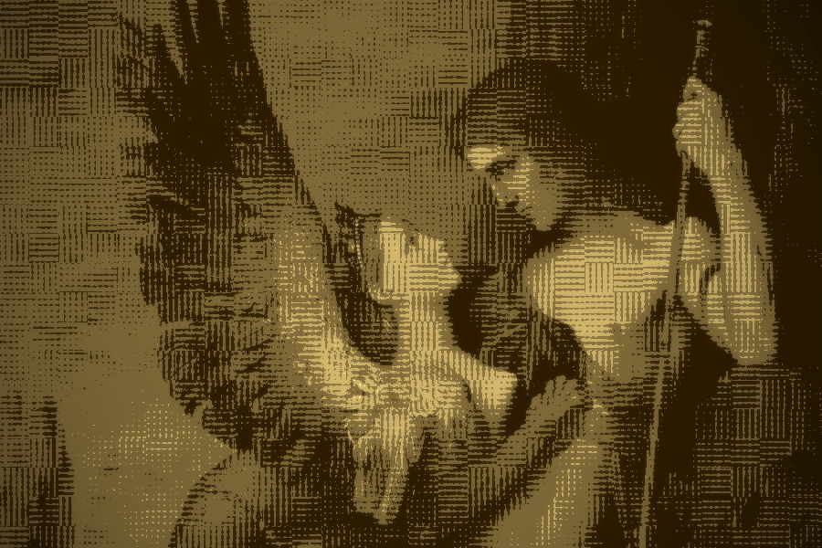
open full sizeoedipus-gold-leaf.png
four greys under a blue-noise screen, re-inked as gold leaf and lit from behind
Oedipus and the Sphinx → blue-noise-32 · gray-4 · 1906 colours · 900×600 · 634 KB
blue-noise-32 · gray-4 · tone gold · pixel size 1 · effects: vignette 45 · glow 2/40
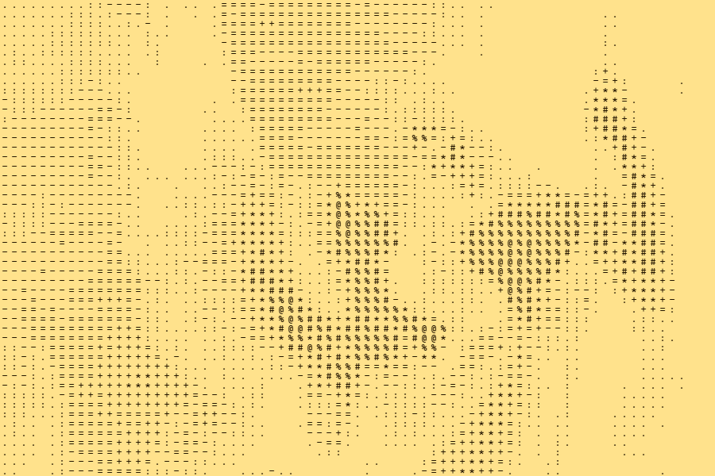
open full sizeoedipus-text-mode-ascii.png
type mode: the same proof set in characters, the grid the .txt export carries
Oedipus and the Sphinx → atkinson · bw · 108 colours · 900×600 · 74 KB
atkinson · bw · pixel size 1 · type mode, ascii at 12px